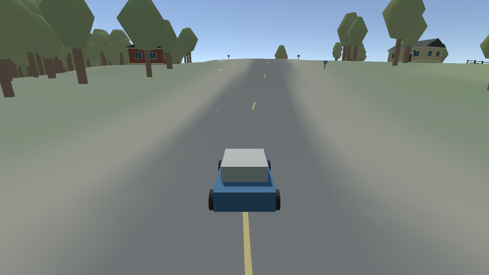
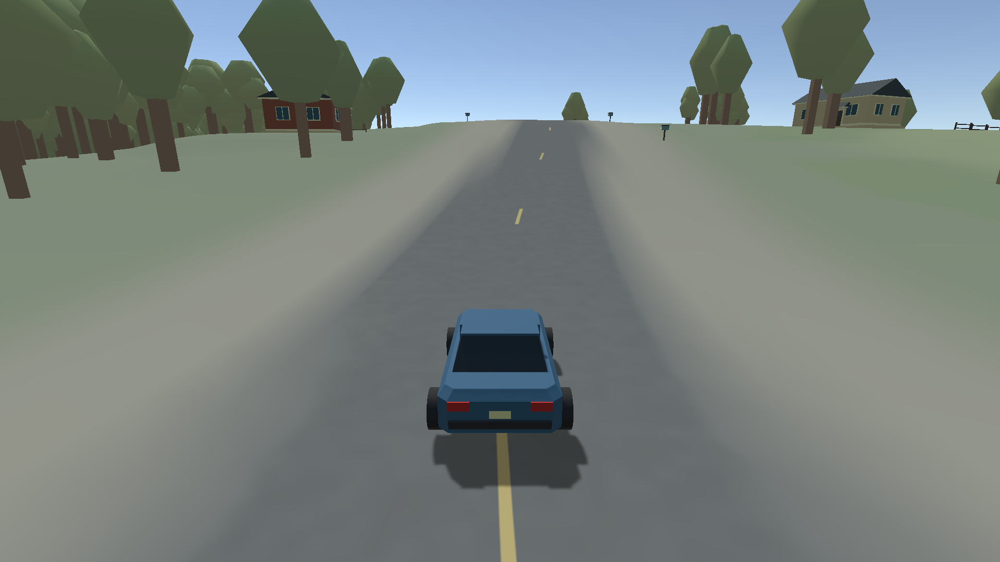
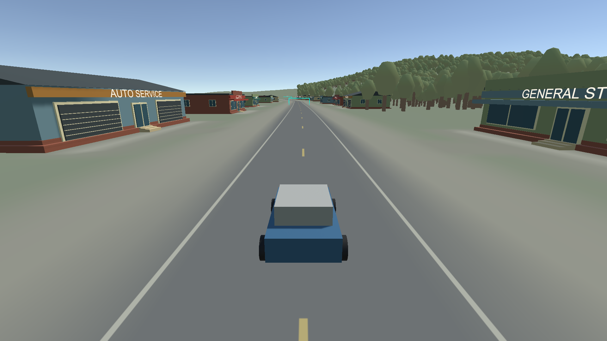
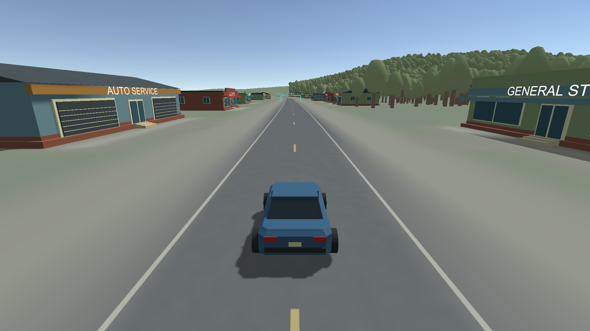
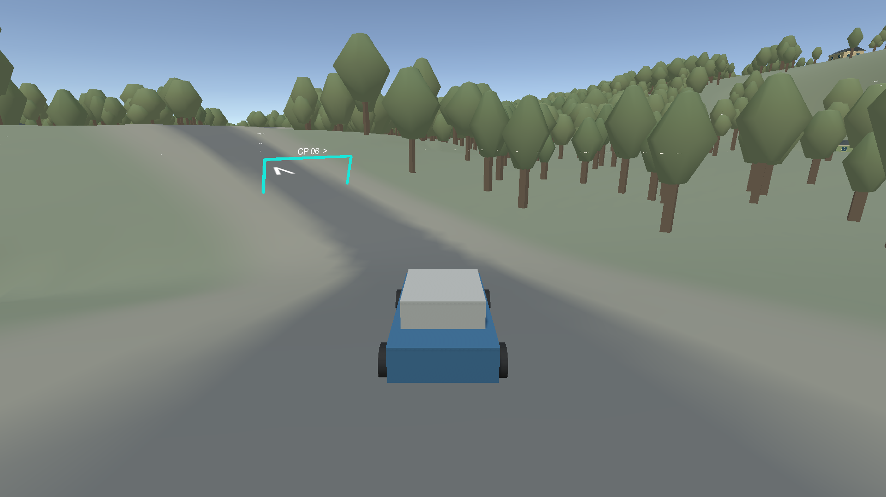
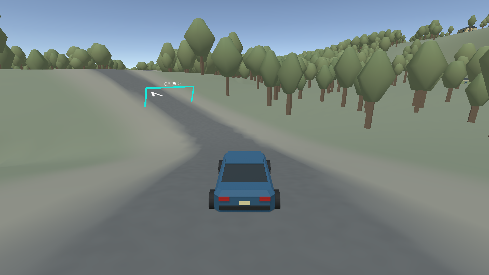
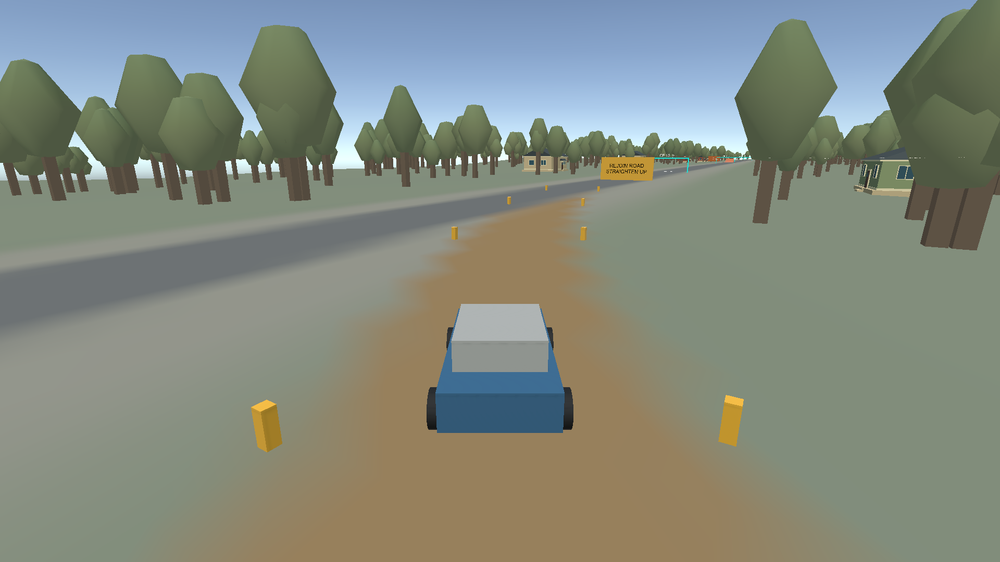
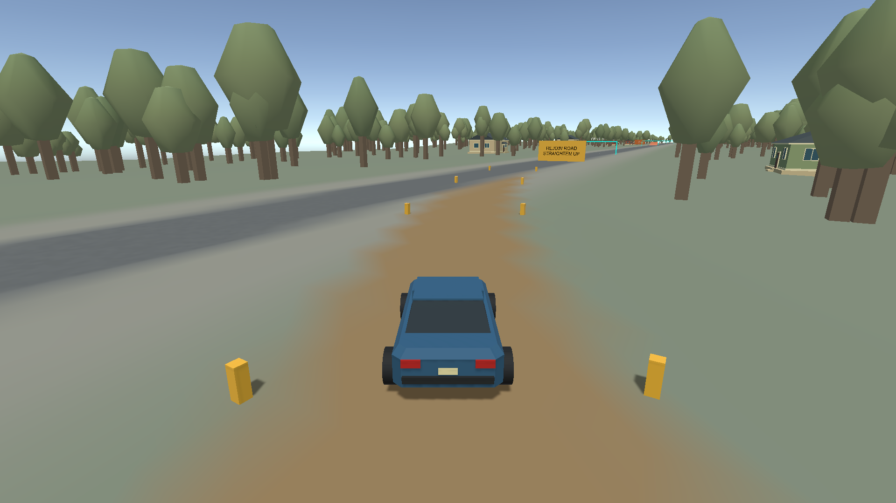
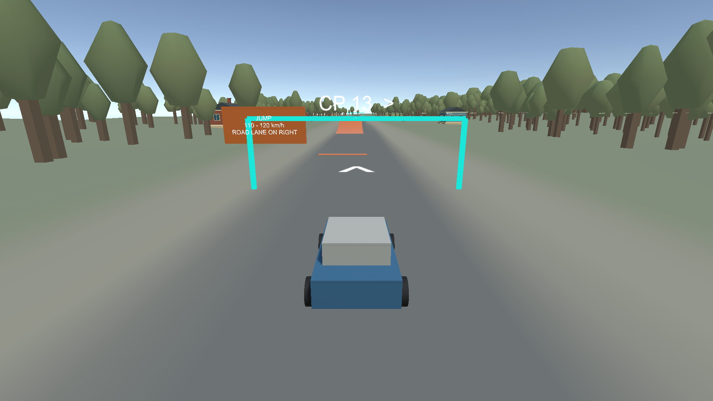
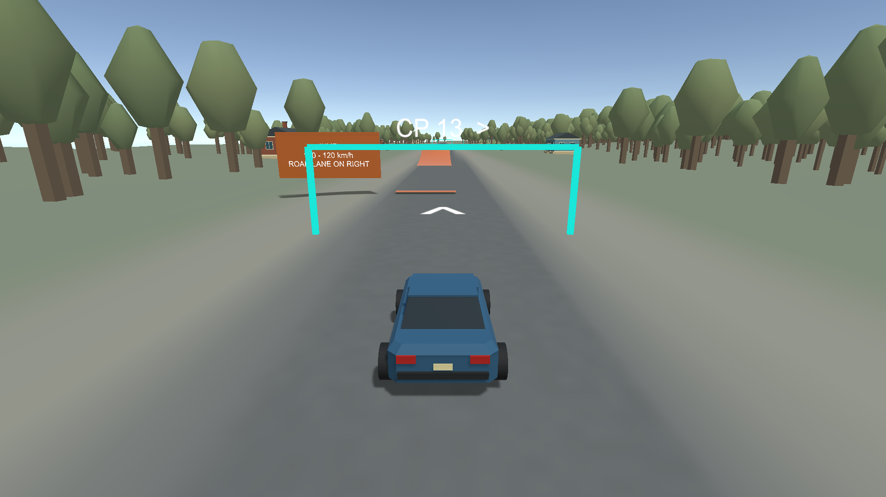

Racer · Phase 8 review
Matched 1920 × 1080 driving-camera renders. Same camera, road profile, houses, shops, woodland and collision. New car bodywork, restrained asphalt detail, ground shadows, foliage shading and depth-tested lettering. These stills show visual changes; standalone measurements and validation limits are in the validation report.
Neighborhood road

Before
AfterCommercial street

Before
AfterWooded road

Before
AfterShortcut and rejoin

Before
AfterJump approach

Before
AfterReview: drive the neighborhood and shops; inspect shadows, text and surface motion; cross a shoulder; use shortcut and jump; hit a prop, restart, finish a race and check saved settings. Phase 8 awaits Dan's review. CR-019 is accepted; CR-013/CR-018 remain deferred.